산업보건지도사 (2017-03-25 기출문제)
1과목: 산업안전보건법령
1. 산업안전보건법령상 용어에 관한 설명으로 옳지 않은 것은?
- "산업재해"란 근로자가 업무에 관계되는 건설물ㆍ설비ㆍ원재료ㆍ가스ㆍ증기ㆍ분진 등에 의하거나 작업 또는 그 밖의 업무로 인하여 사망 또는 부상하거나 질병에 걸리는 것을 말한다.
- "근로자"란 직업의 종류와 관계없이 임금을 목적으로 사업이나 사업장에 근로를 제공하는 자를 말한다.
- "사업주"란 근로자를 사용하여 사업을 하는 자를 말한다.
- "작업환경측정"이란 작업환경 실태를 파악하기 위하여 해당 근로자 또는 작업장에 대하여 사업주가 측정계획을 수립한 후 시료(試料)를 채취하고 분석ㆍ평가하는 것을 말한다.
- "중대재해"란 산업재해 중 재해정도가 심한 것으로서 직업성질병자가 동시에 5명이상 발생한 재해를 말한다.
(정답률: 알수없음)

2. 산업안전보건법령상 산업재해 발생 기록 및 보고 등에 관한 설명으로 옳은 것은?
- 사업주는 중대재해가 발생한 사실을 알게 된 경우에는 지체 없이 발생 개요 및 피해상황 등을 관할 지방고용노동관서의 장에게 전화ㆍ팩스 또는 그 밖에 적절한 방법으로 보고하여야 한다.
- 사업주는 4일 이상의 요양을 요하는 부상자가 발생한 산업재해에 대하여는 그 발생 개요ㆍ원인 및 신고 시기, 재발방지 계획 등을 고용노동부장관에게 신고하여야 한다.
- 건설업의 경우 사업주는 산업재해조사표에 근로자대표의 동의를 받아야 하며, 그 기재 내용에 대하여 근로자대표의 이견이 있는 경우에는 그 내용을 첨부하여야 한다.
- 사업주는 산업재해로 3일 이상의 휴업이 필요한 부상자가 발생한 경우에는 해당 산업재해가 발생한 날부터 3개월 이내에 산업재해조사표를 작성하여 관할 지방고용노동관서의 장에게 제출하여야 한다.
- 사업주는 산업재해 발생기록에 관한 서류를 2년간 보존하여야 한다.
(정답률: 알수없음)
3. 산업안전보건법령상 법령 요지의 게시 및 안전ㆍ보건표지의 부착 등에 관한 설명으로 옳지 않은 것은?
- 사업주는 이 법에 따른 명령의 요지를 상시 각 작업장 내에 근로자가 쉽게 볼 수 있는 장소에 게시하거나 갖추어 두어 근로자로 하여금 알게 하여야 한다.
- 근로자대표는 안전ㆍ보건진단 결과를 통지할 것을 사업주에게 요청할 수 있고 사업주는 이에 성실히 응하여야 한다.
- 사업주는 사업장의 유해하거나 위험한 시설 및 장소에 대한 경고를 위하여 안전ㆍ보건표지를 설치하거나 부착하여야 한다.
- 안전ㆍ보건표지 속의 그림 또는 부호의 크기는 안전ㆍ보건표지의 크기와 비례하여야 하며, 안전ㆍ보건표지 전체 규격의 20퍼센트 이상이 되어야 한다.
- 안전ㆍ보건표지의 성질상 설치하거나 부착하는 것이 곤란한 경우에는 해당 물체에 직접 도장(塗裝)할 수 있다.
(정답률: 알수없음)
4. 산업안전보건법령상 안전보건관리책임자의 업무 내용에 해당하는 것을 모두 고른 것은?
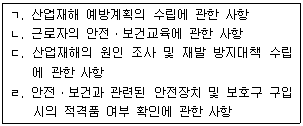
- ㄱ, ㄴ
- ㄷ, ㄹ
- ㄱ, ㄴ, ㄷ
- ㄴ, ㄷ, ㄹ
- ㄱ, ㄴ, ㄷ, ㄹ
(정답률: 알수없음)
5. 산업안전보건법령상 안전보건관리규정에 관한 설명으로 옳지 않은 것은?
- 안전보건관리규정은 해당 사업장에 적용되는 단체협약 및 취업규칙에 반할 수 없다.
- 상시 근로자 100명을 사용하는 정보서비스업 사업주는 안전보건관리규정을 작성하여야 한다.
- 안전보건관리규정에 관하여는 이 법에서 규정한 것을 제외하고는 그 성질에 반하지 아니하는 범위에서「근로기준법」의 취업규칙에 관한 규정을 준용한다.
- 안전보건관리규정을 작성할 경우에는 안전ㆍ보건교육에 관한 사항이 포함되어야 한다.
- 산업안전보건위원회가 설치되어 있지 아니한 사업장의 경우 사업주는 안전보건관리규정을 작성하거나 변경할 때에는 근로자대표의 동의를 받아야 한다.
(정답률: 알수없음)
6. 산업안전보건법령상 유해하거나 위험한 작업의 도급에 관한 설명으로 옳지 않은 것은?
- 도금작업의 도급을 받으려는 자는 고용노동부장관의 인가를 받아야 한다.
- 지방고용노동관서의 장은 도급인가 신청서가 접수된 때에는 접수된 날부터 10일 이내에 신청서를 반려하거나 인가증을 신청자에게 발급하여야 한다.
- 수은, 납, 카드뮴 등 중금속을 제련, 주입, 가공 및 가열하는 작업은 도급인가의 대상이다.
- 지방고용노동관서의 장은 도급인가 신청의 내용 및 한국산업안전보건공단의 확인 결과가 이 법령의 기준에 적합하지 아니하면 이를 인가하여서는 아니 된다.
- 유해한 작업의 도급에 대한 인가를 받으려는 자는 도급인가 신청서를 제출할 때 도급대상 작업의 공정도와 도급계획서를 첨부하여야 한다.
(정답률: 알수없음)
7. 산업안전보건법령상 안전관리전문기관의 지정의 취소 등에 관한 규정의 일부이다. ( )안에 들어갈 숫자의 연결이 옳은 것은?
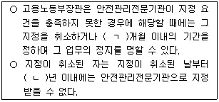
- ㄱ: 1, ㄴ: 1
- ㄱ: 3, ㄴ: 1
- ㄱ: 3, ㄴ: 2
- ㄱ: 6, ㄴ: 1
- ㄱ: 6, ㄴ: 2
(정답률: 알수없음)
8. 산업안전보건법령상 안전ㆍ보건 관리체제에 관한 설명으로 옳지 않은 것은?
- 안전보건관리책임자는 안전관리자와 보건관리자를 지휘ㆍ감독한다.
- 안전보건관리책임자는 해당 사업에서 그 사업을 실질적으로 총괄관리하는 사람이어야 한다.
- 안전관리자는 산업재해에 관한 통계의 유지ㆍ관리ㆍ분석을 위한 보좌 및 조언ㆍ지도 등의 업무를 수행하여야 한다.
- 고용노동부장관은 안전관리전문기관의 업무정지를 명하여야 하는 경우에 그 업무정지가 공익을 해칠 우려가 있다고 인정하면 업무정지처분을 갈음하여 2억원 이하의 과징금을 부과할 수 있다.
- 상시 근로자수가 500명 이상인 식료품 제조업의 경우 안전관리자를 2명 이상 선임하여야 한다.
(정답률: 알수없음)
9. 산업안전보건법령상 도급사업 시 구성하는 안전ㆍ보건에 관한 협의체의 협의사항에 포함되지 않는 것은?
- 작업장 간의 연락 방법
- 재해발생 위험 시의 대피방법
- 작업장의 순회점검에 관한 사항
- 작업장에서의 위험성평가의 실시에 관한 사항
- 수급인 상호간의 작업공정의 조정
(정답률: 알수없음)
10. 산업안전보건법령상 안전인증에 관한 설명으로 옳은 것은?
- 연구ㆍ개발을 목적으로 안전인증대상 기계ㆍ기구등을 제조하는 경우에도 안전인증을 받아야 한다.
- 고용노동부장관은 안전인증을 받은 자가 안전인증기준을 지키고 있는지를 5년을 주기로 확인하여야 한다.
- 곤돌라를 설치ㆍ이전하는 경우뿐만 아니라 그 주요 구조 부분을 변경하는 경우 에도 안전인증을 받아야 한다.
- 서면심사와 기술능력 및 생산체계 심사 결과가 안전인증기준에 적합할 경우에 유해ㆍ위험한 기계ㆍ기구ㆍ설비등의 표본을 추출하여 하는 심사를 개별 제품심사라고 한다.
- 예비심사의 경우 안전인증 신청서를 제출받은 안전인증기관은 7일 이내에 심사하여야 하며 부득이한 사유가 있을 때에는 15일의 범위에서 심사기간을 연장할 수 있다.
(정답률: 알수없음)
11. 산업안전보건법령상 도급인인 사업주가 작업장의 안전ㆍ보건조치 등을 위하여 2일에 1회 이상 순회점검하여야 하는 사업을 모두 고른 것은?
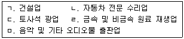
- ㄱ, ㄴ, ㅁ
- ㄱ, ㄷ, ㄹ
- ㄴ, ㄷ, ㅁ
- ㄱ, ㄴ, ㄷ, ㄹ
- ㄱ, ㄷ, ㄹ, ㅁ
(정답률: 알수없음)
12. 산업안전보건기준에 관한 규칙상 니트로화합물을 제조하는 작업장의 비상구 설치에 관한 설명으로 옳지 않은 것은?
- 출입구 외에 안전한 장소로 대피할 수 있는 비상구 1개 이상을 설치할 것
- 비상구의 문은 피난 방향으로 열리도록 하고, 실내에서 항상 열 수 있는 구조로 할 것
- 비상구의 너비는 0.75미터 이상으로 하고, 높이는 1.5미터 이상으로 할 것
- 비상구는 출입구와 같은 방향에 있으며 출입구로부터 3미터 이상 떨어져 있을 것
- 작업장의 각 부분으로부터 하나의 비상구 또는 출입구까지의 수평거리가 50미터 이하가 되도록 할 것
(정답률: 알수없음)
13. 산업안전보건법령상 자율안전확인대상 기계ㆍ기구등에 해당하지 않는 것은?
- 휴대형 연삭기
- 혼합기
- 파쇄기
- 자동차정비용 리프트
- 기압조절실(chamber)
(정답률: 알수없음)
14. 산업안전보건법령상 안전검사 대상에 해당하는 것을 모두 고른 것은?
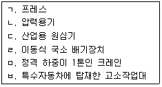
- ㄱ, ㄹ, ㅂ
- ㄴ, ㅁ, ㅂ
- ㄱ, ㄴ, ㄷ, ㅂ
- ㄴ, ㄷ, ㄹ, ㅁ
- ㄱ, ㄴ, ㄷ, ㄹ, ㅁ
(정답률: 알수없음)
15. 산업안전보건법령상 유해ㆍ위험 방지를 위하여 방호조치가 필요한 기계ㆍ기구 등과 이에 설치하여야 할 방호장치를 옳게 연결한 것은?
- 예초기 - 회전체 접촉 예방장치
- 진공포장기 - 압력방출장치
- 금속절단기 - 구동부 방호 연동장치
- 원심기 - 날접촉 예방장치
- 공기압축기- 압력방출장치
(정답률: 알수없음)
16. 산업안전보건법령상 3년 이하의 징역 또는 2천만원 이하의 벌금에 처하게 될 수 있는 자는?
- 중대재해 발생현장을 훼손한 자
- 공정안전보고서의 내용이 중대산업사고를 예방하기 위하여 적합하다고 통보받기 전에 관련 설비를 가동한 자
- 동력으로 작동하는 기계ㆍ기구로서 작동부분의 돌기부분을 묻힘형으로 하지 않거나 덮개를 부착하지 않고 양도한 자
- 안전인증을 받지 않은 유해ㆍ위험한 기계ㆍ기구ㆍ설비등에 안전인증표시를 한 자
- 작업환경측정 결과에 따라 근로자의 건강을 보호하기 위하여 해당 시설ㆍ설비의 설치ㆍ개선 또는 건강진단의 실시 등의 조치를 하지 아니한 자
(정답률: 알수없음)
17. 산업안전보건기준에 관한 규칙상 통로를 설치하는 사업주가 준수하여야 하는 사항으로 옳지 않은 것은?
- 통로의 주요 부분에 통로표시를 하고, 근로자가 안전하게 통행할 수 있도록 하여야 한다.
- 통로면으로부터 높이 2미터 이내의 장애물을 제거하는 것이 곤란하다고 고용노동부장관이 인정하는 경우에는 근로자에게 발생할 수 있는 부상 등의 위험을 방지하기 위한 안전 조치를 하여야 한다.
- 가설통로를 설치하는 경우, 건설공사에 사용하는 높이 8미터 이상인 비계다리에는 7미터 이내마다 계단참을 설치하여야 한다.
- 잠함(潛函) 내 사다리식 통로를 설치하는 경우 그 폭은 30센티미터 이상으로 설치하여야 한다.
- 계단 및 계단참을 설치하는 경우 매제곱미터당 500킬로그램 이상의 하중에 견딜 수 있는 강도를 가진 구조로 설치하여야 한다.
(정답률: 알수없음)
18. 산업안전보건법령상 화학물질의 유해성ㆍ위험성을 조사하고 그 조사보고서를 고용노동부장관에게 제출하여야 하는 것은?
- 방사성 물질
- 천연으로 산출된 화학물질
- 연간 수입량이 1,000킬로그램 미만인 경우로서 고용노동부장관의 확인을 받은 신규화학물질
- 전량 수출하기 위하여 연간 10톤 이하로 제조하거나 수입하는 경우로서 고용노동부장관의 확인을 받은 신규화학물질
- 일반 소비자의 생활용으로 직접 소비자에게 제공되고 국내의 사업장에서 사용되지 않는 경우로서 고용노동부장관의 확인을 받은 신규화학물질
(정답률: 알수없음)
19. 산업안전보건법령상 건강진단에 관한 설명으로 옳은 것은?
- 건강진단의 종류에는 일반건강진단, 특수건강진단, 채용시건강진단, 수시건강진단, 임시건강진단이 있다.
- 6개월간 밤 12시부터 오전 5시까지의 시간을 포함하여 계속되는 8시간 작업을 월 평균 4회 이상 수행하는 야간작업 근로자도 특수건강진단을 받아야 한다.
- 벤젠에 노출되는 업무에 종사하는 근로자는 배치 후 3개월 이내에 첫 번째 특수건강진단을 받고, 이후 6개월마다 주기적으로 특수건강진단을 받아야 한다.
- 다른 사업장에서 해당 유해인자에 대하여 배치전건강진단을 받고 9개월이 지난 근로자로서 건강진단결과를 적은 서류를 제출한 근로자는 배치전건강진단을 실시하지 아니할 수 있다.
- 특수건강진단대상업무로 인하여 해당 유해인자에 의한 건강장해를 의심하게 하는 증상을 보이는 근로자에 대하여 사업주가 실시하는 건강진단을 임시건강진단이라 한다.
(정답률: 알수없음)
20. 산업안전보건법령상 질병자의 근로 금지ㆍ제한에 관한 설명으로 옳지 않은 것은?
- 사업주는 심장 등의 질환이 있는 사람으로서 근로에 의하여 병세가 악화될 우려가 있는 사람에 대해서는 의사의 진단에 따라 근로를 금지하여야 한다.
- 사업주는 발암성물질을 취급하는 작업에 종사하는 근로자에게는 1일 6시간, 1주 34시간을 초과하여 근로하게 하여서는 아니 된다.
- 사업주는 착암기 등에 의하여 신체에 강렬한 진동을 주는 작업에서 유해ㆍ위험예방조치 외에 작업과 휴식의 적정한 배분 등 근로자의 건강 보호를 위한 조치를 하여야 한다.
- 사업주는 심장판막증이 있는 근로자를 고기압 업무에 종사하도록 하여서는 아니된다.
- 사업주는 근로가 금지되거나 제한된 근로자가 건강을 회복하였을 때에는 지체없이 취업하게 하여야 한다.
(정답률: 알수없음)
21. 산업안전보건법령상 유해ㆍ위험방지계획서의 제출 대상 업종에 해당하지 않는 것은? (단, 전기 계약용량이 300킬로와트 이상인 사업에 한함)
- 전기장비 제조업
- 식료품 제조업
- 가구 제조업
- 목재 및 나무제품 제조업
- 전자부품 제조업
(정답률: 알수없음)
22. 산업안전보건법령상 지도사에 관한 설명으로 옳은 것은?
- 지도사 시험에 합격하여 고용노동부장관에게 등록하여야만 지도사의 자격을 가진다.
- 이 법을 위반하여 벌금형을 선고받고 6개월이 된 자는 지도사의 등록을 할 수 있다.
- 지도사는 3년마다 갱신등록을 하여야 하며, 갱신등록은 지도실적이 없어도 가능하다.
- 지도사 등록의 갱신기간 동안 지도실적이 2년 이상인 지도사의 보수교육시간은 10시간 이상으로 한다.
- 산업안전 및 산업보건분야에서 3년간 실무에 종사한 지도사가 직무를 개시하려는 경우에는 등록을 하기 전 연수교육이 면제된다.
(정답률: 알수없음)
23. 산업안전보건법령상 서류의 보존기간에 관한 설명으로 옳지 않은 것은?
- 기관석면조사를 한 건축물이나 설비의 소유주 등과 석면조사기관은 그 결과에 관한 서류를 5년간 보존하여야 한다.
- 지정측정기관은 작업환경측정에 관한 사항으로서 측정대상 사업장의 명칭 및 소재지 등을 기재한 서류를 3년간 보존하여야 한다.
- 사업주는 노사협의체 회의록을 2년간 보존하여야 한다.
- 자율안전확인대상 기계ㆍ기구 등을 제조하거나 수입하려는 자는 자율안전기준에 맞는 것임을 증명하는 서류를 2년간 보존하여야 한다.
- 사업주는 화학물질의 유해성ㆍ위험성 조사에 관한 서류를 3년간 보존하여야 한다.
(정답률: 알수없음)
24. 산업안전보건기준에 관한 규칙상 근골격계부담작업으로 인한 건강장해 예방에 관한 설명으로 옳지 않은 것은?
- 신설되는 사업장의 사업주는 근로자가 근골격계부담작업을 하는 경우에 신설일부터 1년 이내에 최초의 유해요인조사를 하여야 한다.
- 유해요인조사에는 작업장 상황, 작업조건, 작업과 관련된 근골격계질환 징후와 증상 유무 등이 포함된다.
- 유해요인조사는 근로자와의 면담, 증상 설문조사, 인간공학적 측면을 고려한 조사 등 적절한 방법으로 하여야 한다.
- 근로자는 근골격계부담작업으로 인하여 운동범위의 축소 등의 징후가 나타나는 경우 그 사실을 사업주에게 통지할 수 있다.
- 연간 7명이 근골격계질환으로 인한 업무상질병으로 인정받은 상시 근로자수 85명을 고용하고 있는 사업주는 근골격계질환 예방관리 프로그램을 시행하여야 한다.
(정답률: 알수없음)
25. 산업안전보건법령상 건강관리수첩 발급대상 업무 및 대상요건에 해당하지 않는 것은?
- 니켈 또는 그 화합물을 광석으로부터 추출하여 제조하거나 취급하는 업무에 5년이상 종사한 사람
- 염화비닐을 제조하거나 사용하는 석유화학설비를 유지ㆍ보수하는 업무에 4년 이상 종사한 사람
- 비파괴검사 업무에 3년 이상 종사한 사람
- 석면 또는 석면방직제품을 제조하는 업무에 3개월 이상 종사한 사람
- 비스-(클로로메틸)에테르를 제조하거나 취급하는 업무에 3년 이상 종사한 사람
(정답률: 알수없음)
2과목: 산업보건일반
26. 산업피로에 관한 설명으로 옳지 않은 것은?
- 근육 내 에너지원의 부족은 피로발생의 생리적 원인에 해당된다.
- 체내 대사물질인 젖산, 암모니아, 시스틴, 잔여질소는 피로물질이라 한다.
- 국소피로의 측정은 피로의 주관적 측정이다.
- 산업피로는 정신적 피로와 육체적 피로로 구분할 수 있다.
- 전신피로는 심박수를 측정한 후 산출하여 판정한다.
(정답률: 알수없음)
27. 화학물질의 분류ㆍ표시 및 물질안전보건자료에 관한 기준에 따른 물질안전보건자료의 작성항목으로 옳지 않은 것은?
- 유해성ㆍ위험성
- 누출 사고 시 대처 방법
- 취급 및 저장방법
- 환경에 미치는 영향
- 안정성 및 폭발성
(정답률: 알수없음)
28. 산업안전보건기준에 관한 규칙상 밀폐공간과 관련된 내용으로 옳지 않은 것은?
- 사업주는 근로자가 밀폐공간에서 작업을 하는 경우에 그 작업장과 외부의 감시인 간에 상시 연락을 취할 수 있는 설비를 설치하여야 한다.
- 사업주는 근로자가 밀폐공간에서 작업을 하는 경우에 작업을 시작하기 전과 작업중에 해당 작업장을 적정공기 상태가 유지되도록 환기하여야 한다.
- "유해가스"란 밀폐공간에서 탄산가스ㆍ황화수소 등의 유해물질이 가스상태로 공기 중에 발생하는 것을 말한다.
- "적정공기"란 산소농도의 범위가 18 % 이상, 23.5 % 미만, 탄산가스의 농도가 1.5 % 미만, 황화수소의 농도가 20 ppm 미만인 수준의 공기를 말한다.
- 사업주는 근로자가 밀폐공간에서 작업을 하는 경우에 그 장소에 근로자를 입장시킬 때와 퇴장시킬 때마다 인원을 점검하여야 한다.
(정답률: 알수없음)
29. 산업보건의 역사에 관한 설명으로 옳은 것은?
- 라마찌니(B. Ramazzini)는 '직업인의 질병'을 저술하였다.
- 히포크라테스는 구리광산에서 산 증기의 위험성을 보고하였다.
- 원진레이온에서 발생한 직업병의 원인물질은 황화수소이다.
- 우리나라는 1991년에 산업안전보건법을 제정하였다.
- 우리나라는 1995년에 작업환경측정실시규정을 제정하였다.
(정답률: 알수없음)
30. 근로자 건강진단 실시기준에서 건강진단 실시결과에 따라 건강상담, 보호구 지급 및 착용지도, 추적검사, 근무 중 치료 등의 조치를 시행할 수 있는 기관 또는 자격자에 해당하지 않는 것은?
- 건강진단기관
- 산업보건의
- 보건관리자
- 보건진단기관
- 한국산업안전보건공단 근로자 건강센터
(정답률: 알수없음)
31. 작업환경측정 및 지정측정기관 평가 등에 관한 고시에서 정한 6가 크롬화합물의 측정과 분석방법에 관한 설명으로 옳은 것은?
- 시료채취기는 유리섬유 여과지와 패드가 장착된 3단 카세트를 사용한다.
- 시료채취용 펌프는 작업자의 정상적인 작업 상황에서 작업자에게 부착 가능해야 하며, 적정유량(1∼ 4 L/분)에서 6시간 동안 연속적으로 작동이 가능해야 한다.
- 시료채취량은 여과지에 채취된 먼지의 무게가 10 mg을 초과하지 않도록 펌프의 유량 및 시료채취 시간을 조절하여 시료채취를 한다.
- 현장공시료의 개수는 채취된 총 시료 수의 5 % 이상 또는 시료세트 당 1~10개를 준비한다.
- 분석기기는 전도도 또는 분광 검출기가 장착된 이온크로마토그래피이어야 한다.
(정답률: 알수없음)
32. 산업안전보건법령상 유해물질 또는 작업장소에 따른 포위식 후드의 제어풍속이 옳지 않은 것은?
- 메틸알코올(가스상태) - 0.4 m/sec
- 망간 및 그 화합물(입자상태) - 0.6 m/sec
- 염화비닐(가스상태) - 0.5 m/sec
- 주물모래를 재생하는 장소 - 0.7 m/sec
- 암석 등 탄소원료 또는 알루미늄박을 체로 거르는 장소 - 0.7 m/sec
(정답률: 알수없음)
33. 상이한 반응을 보이는 집단의 중심경향을 파악하고자 할 때 유용하게 이용되는 대푯값은
- 산술평균
- 가중평균
- 기하평균
- 조화평균
- 중앙값
(정답률: 알수없음)
34. 근로자 건강증진활동 지침에 따라 사업주가 건강증진활동계획을 수립할 때 포함해야 할 사항은
- 작업환경측정결과 사후관리조치
- 건강진단결과 사후관리조치
- 위험성평가결과 사후관리조치
- 화학물질의 유해성ㆍ위험성 평가결과 사후관리조치
- 직무스트레스 평가결과 사후관리조치
(정답률: 알수없음)
35. 화학물질 및 물리적 인자의 노출기준에 따른 화학물질의 생식독성 분류 기준은
- 국제암연구소의 분류
- 미국산업위생전문가협회의 분류
- 미국국립산업안전보건연구원의 분류
- 미국독성프로그램의 분류
- 유럽연합의 분류ㆍ표시에 관한 규칙의 분류
(정답률: 알수없음)
36. 직업에 대한 개인의 동기와 환경이 제공해 주는 여러 여건들이 조화를 이루지 못할 때, 혹은 직장에서의 요구와 그 요구에 대처할 수 있는 인간의 능력에 차이가 존재할 때 긴장이 발생하게 된다고 보는 직무스트레스 모델은
- 인간 - 환경 적합 모델
- ISR 모델
- 노력 - 보상 불균형 모델
- Newman의 요소 모델
- 요구 - 통제 모델
(정답률: 알수없음)
37. 폐환기 및 폐기능에 관한 설명으로 옳은 것을 모두 고른 것은?
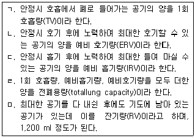
- ㄱ, ㄷ
- ㄴ, ㄹ, ㅁ
- ㄱ, ㄴ, ㄷ, ㅁ
- ㄱ, ㄴ, ㄹ, ㅁ
- ㄴ, ㄷ, ㄹ, ㅁ
(정답률: 알수없음)
38. 금속의 체내대사에 관한 설명으로 옳지 않은 것은?
- 무기연 화합물은 주로 호흡기와 소화기를 통하여 인체 내에 들어 온다.
- 금속수은의 표적장기는 심장과 근육이고, 무기수은염의 표적장기는 뇌이다.
- 체내에 흡수된 카드뮴은 혈액을 거쳐 2/3정도 간과 신장으로 이동하고, 물질대사를 통해 메탈로티오네인(metallothionein)이 합성되어 혈액을 통하여 다른 장기로 이동한다.
- 체내에 흡수된 망간은 10∼30 %정도 간에 축적되며, 뇌혈관막을 통과하기도 한다.
- 베릴륨의 주된 흡수 경로는 호흡기이고, 위장관계나 피부를 통하여 흡수될 수도 있다.
(정답률: 알수없음)
39. 하인리히(H. Heinrich)의 사고 발생과정 5단계에 관한 설명으로 옳지 않은 것은?
- 사고예방 중심은 1단계이다.
- 도미노 이론이라고도 한다.
- 불안전한 행동 및 상태는 3단계에 해당된다.
- 낙하ㆍ비래와 같은 사고는 4단계에 해당된다.
- 사고 결과로 발생하는 상해는 5단계에 해당된다.
(정답률: 알수없음)
40. 우리나라 산업재해 발생형태의 분류 항목이 아닌 것은?
- 전도
- 붕괴ㆍ도괴
- 협착
- 유해물질접촉
- 절단
(정답률: 알수없음)
41. 하이드라진(Hydrazine)의 증기압은 10 mmHg, 노출기준은 0.⑤ ppm이며, 노말헥산의 증기압은 124 mmHg, 노출기준은 50 ppm이다. 다음 중 옳은 것을 모두 고른 것은? (단, 증기유해지수(VHI) = 포화농도/노출기준)
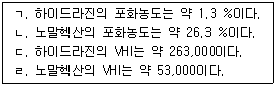
- ㄱ, ㄷ
- ㄱ, ㄹ
- ㄱ, ㄴ, ㄷ
- ㄴ, ㄷ, ㄹ
- ㄱ, ㄴ, ㄷ, ㄹ
(정답률: 알수없음)
42. 사실을 확인하여 미리 정해 둔 판정기준에 근거해서 재해요소를 찾고 그 중요도를 평가하는 재해요인의 분석기법은
- 특성요인도 분석
- 문답방식 분석
- 일반적인 재해원인 분석
- 4M기법
- 3E기법
(정답률: 알수없음)
43. 재해율에 관한 설명으로 옳은 것은?
- 천인율은 산출이 용이하며 근로시간수나 근로일수에 변동이 많은 사업장에 적합하다.
- 종합재해지수(FSI)의 계산식은
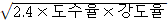
이다. - 사망 및 장해등급 1 ~ 3급 상해자의 손실일수는 6,500일이다.
- 일시 전근로불능상해 또는 일시 부분근로불능상해는 휴식일수에 250/360을 곱하여 산정한다.
- 작업기록을 근거로 근로시간의 산출이 불가능할 때는 근로자 1인당 연간 근로시간은 2,400시간으로 계산한다.
(정답률: 알수없음)
44. 환경역학연구에 관한 설명으로 옳지 않은 것은?
- 개인단위가 아닌 인구집단 또는 특정집단을 분석의 단위로 하는 연구를 생태학적 연구라 한다.
- 참여하는 대상을 알고자 하는 결과변수(질병 또는 특정 건강상태)의 유무를 기반으로 정해지는 것은 환자-대조군 연구이다.
- 환자-대조군 연구에서 교차비(OR)가 1보다 크다는 것은 요인노출과 결과변수가 양의 관계에 있다는 것을 의미한다.
- 코호트연구에서 연관성은 환자군에서의 질병발생률과 대조군에서의 질병발생률의 비인 상대위험도(RR)로 나타낸다.
- 패널연구는 반복측정연구라고도 하며, 단면연구와 코호트연구의 혼합형태이다.
(정답률: 알수없음)
45. 트리클로로에틸렌에 관한 설명으로 옳지 않은 것은?
- 무색의 불연성 액체로 달콤한 냄새가 난다.
- 휘발성이 강해 주로 호흡기로 흡입되며 피부흡수는 드물다.
- 화학물질 및 물리적 인자의 노출기준에서 발암성을 1B로 구분한다.
- 주로 금속가공 공장에서 기계 세척용이나 금속부품의 증기탈지 작업에 사용된다.
- 주로 간, 콩팥, 심혈관계, 중추신경계, 피부에 건강상 악영향을 미친다.
(정답률: 알수없음)
46. 다음에서 설명하는 금속은
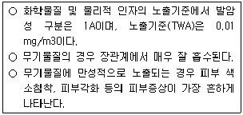
- 비소
- 납
- 수은
- 망간
- 크롬
(정답률: 알수없음)
47. 방독마스크에 관한 설명으로 옳지 않은 것은?
- 일산화탄소용 정화통의 색깔은 흑색이다.
- 방독마스크의 흡착제로 가장 많이 쓰는 것은 활성탄이다.
- 사용 중에 조금이라도 가스냄새가 나는 경우에는 새로운 정화통으로 교환한다.
- 정화통은 온도나 습도에 영향을 받으므로 건냉소에 보관한다.
- 공기 중 사염화탄소 농도가 2,500 ppm이며, 정화통의 정화능력이 사염화탄소 0.4%에서 150분간 사용가능하다면 유효시간은 240분이다.
(정답률: 알수없음)
48. 제철소의 작업환경에서 발생하는 코크스오븐배출물질(COE)의 시료 채취에 사용하는 매체는
- 은막 여과지
- MCE 여과지
- PVC 여과지
- 활성탄관
- 실리카겔관
(정답률: 알수없음)
49. 소변 또는 혈액을 이용한 생물학적 모니터링에 관한 설명으로 옳지 않은 것은?
- 혈액을 이용한 생물학적 모니터링은 혈액 구성성분에 개인간 차이가 적다.
- 혈액을 이용한 생물학적 모니터링은 소변에 비해 약물동력학적 변이 요인들의 영향을 적게 받는다.
- 소변을 이용한 생물학적 모니터링은 소변 배설량의 변화로 농도보정이 필요하다.
- 생물학적 모니터링을 위한 혈액 채취는 정맥혈을 기준으로 한다.
- 소변은 많은 양의 시료 확보가 가능하다.
(정답률: 알수없음)
50. 입자상물질에 관한 설명으로 옳지 않은 것은?
- 호흡기계의 어느 부위에 침착하더라도 독성을 나타내는 입자상물질을 흡입성분진(IPM)이라 한다.
- 흄은 금속의 증기화, 증기물의 산화, 증기물의 가공에 의하여 발생한다.
- 호흡성분진(RPM)의 평균 입자 크기는 4㎛이다.
- 가스교환지역인 폐포나 폐기도에 침착되었을 때 독성을 나타내는 입자상물질을 흉곽성분진(TPM)이라 한다.
- 스모크는 유기물질의 불완전 연소에 의하여 생성된다.
(정답률: 알수없음)
3과목: 기업진단 · 지도
51. 파스칼(R. Pascale)과 애토스(A. Athos)의 7S 조직문화 구성요소 중 가장 핵심적인 요소는
- 전략
- 공유가치
- 구성원
- 제도ㆍ절차
- 관리스타일
(정답률: 알수없음)
52. 상황적합적 조직구조이론에 관한 설명으로 옳지 않은 것은?
- 우드워드(J. Woodward)는 기술을 단위생산기술, 대량생산기술, 연속공정기술로 나누었는데, 대량생산에는 기계적 조직구조가 적합하고, 연속공정에는 유기적 조직구조가 적합하다고 주장하였다.
- 번즈(T. Burns)와 스탈커(G. Stalker)는 안정적인 환경에서는 기계적인 조직이, 불확실한 환경에서는 유기적인 조직이 효과적이라고 주장하였다.
- 톰슨(J. Thompson)은 기술을 단위작업 간의 상호의존성에 따라 중개형, 장치형, 집약형으로 유형화하고, 이에 적합한 조직구조와 조정형태를 제시하였다.
- 페로우(C. Perrow)는 기술을 다양성 차원과 분석가능성 차원을 기준으로 일상적 기술, 공학적 기술, 장인기술, 비일상적 기술로 유형화하였다.
- 블라우(P. Blau), 차일드(J. Child)는 환경의 불확실성을 상황변수로 연구하였다.
(정답률: 알수없음)
53. 인사고과에 관한 설명으로 옳은 것을 모두 고른 것은?
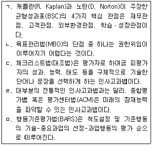
- ㄱ, ㅁ
- ㄷ, ㄹ
- ㄱ, ㄴ, ㄷ
- ㄷ, ㄹ, ㅁ
- ㄱ, ㄷ, ㄹ, ㅁ
(정답률: 알수없음)
54. 프로젝트 활동의 단축비용이 단축일수에 따라 비례적으로 증가한다고 할 때, 정상활동으로 가능한 프로젝트 완료일을 최소의 비용으로 하루 앞당기기 위해 속성으로 진행되어야 할 활동은
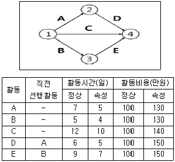
- A
- B
- C
- D
- E
(정답률: 알수없음)
55. 경력개발에 관한 설명으로 옳은 것은?
- 경력 정체기에 접어들은 종업원들이 보여주는 반응유형은 방어형, 절망형, 성과미달형, 이상형으로 구분된다.
- 샤인(E. Schein)은 개인의 경력욕구 유형을 관리지향, 기술-기능지향, 안전지향 등 세 가지로 구분하였다.
- 홀(D. Hall)의 경력단계 모델에서 중년의 위기가 나타나는 단계는 확립단계이다.
- 이중 경력경로(dual-career path)는 개인이 조직에서 경험하는 직무들이 수평적 뿐만 아니라 수직적으로 배열되어 있는 경우이다.
- 경력욕구는 조직이 개인에게 기대하는 행동인 경력역할과 개인 자신이 추구하려고 하는 경력방향에 의해 결정된다.
(정답률: 알수없음)
56. 경영참가제도에 관한 설명으로 옳지 않은 것은?
- 경영참가제도는 단체교섭과 더불어 노사관계의 양대 축을 형성하고 있다.
- 독일은 노사공동결정제를 실시하고 있다.
- 스캔론플랜(Scanlon plan)은 경영참가제도 중 자본참가의 한 유형이다.
- 종업원지주제(ESOP)는 원래 안정주주의 확보라는 기업방어적인 측면에서 시작되었다.
- 정치적인 측면에서 볼 때 경영참가제도의 목적은 산업민주주의를 실현하는데 있다.
(정답률: 알수없음)
57. 동기부여이론에 관한 설명으로 옳지 않은 것은?
- 동기부여이론을 내용이론과 과정이론으로 구분할 때 알더퍼(C. Alderfer)의 ERG 이론은 내용이론이다.
- 맥클랜드(D. McClelland)의 성취동기이론에서 성취욕구를 측정하기에 가장 적합한 것은 TAT(주제통각검사)이다.
- 허츠버그(F. Herzberg)의 이요인이론에 따르면, 동기유발이 되기 위해서는 동기요인은 충족시키고, 위생요인은 제거해 주어야 한다.
- 브룸(V. Vroom)의 기대이론은 기대감, 수단성, 유의성에 의해 노력의 강도가 결정되는데 이들 중 하나라도 0이면 동기부여가 안된다고 한다.
- 아담스(J. Adams)는 페스팅거(L. Festinger)의 인지부조화 이론을 동기유발과 연관시켜서 공정성이론을 체계화하였다.
(정답률: 알수없음)
58. 수요예측을 위한 시계열분석에 관한 설명으로 옳지 않은 것은?
- 시계열분석은 장래의 수요를 예측하는 방법으로, 종속변수인 수요의 과거 패턴이 미래에도 그대로 지속된다는 가정에 근거를 두고 있다.
- 전기수요법은 가장 최근의 수요로 다음 기간의 수요를 예측하는 기법으로, 수요가 안정적일 경우 효율적으로 사용할 수 있다.
- 이동평균법은 우연변동만이 크게 작용하는 경우 유용한 기법으로, 가장 최근 n기간 데이터를 산술평균하거나 가중평균하여 다음 기간의 수요를 예측할 수 있다.
- 추세분석법은 과거 자료에 뚜렷한 증가 또는 감소의 추세가 있는 경우, 과거 수요와 추세선상 예측치 간 오차의 합을 최소화하는 직선 추세선을 구하여 미래의 수요를 예측할 수 있다.
- 지수평활법은 추세나 계절변동을 모두 포함하여 분석할 수 있으나, 평활상수를 작게 하여도 최근 수요 데이터의 가중치를 과거 수요 데이터의 가중치보다 작게 부과할 수 없다.
(정답률: 알수없음)
59. 하우 리(H. Lee)가 제안한 공급사슬 전략 중, 수요의 불확실성이 낮고 공급의 불확실성이 높은 경우 필요한 전략은
- 효율적 공급사슬
- 반응적 공급사슬
- 민첩한 공급사슬
- 위험회피 공급사슬
- 지속가능 공급사슬
(정답률: 알수없음)
60. 심리평가에서 신뢰도와 타당도에 관한 설명으로 옳은 것은?
- 내적일치 신뢰도(internal consistency reliability)를 알아보기 위해서는 동일한 속성을 측정하기 위한 검사를 두 가지 다른 형태로 만들어 사람들에게 두 가지형 모두를 실시한다.
- 다양한 신뢰도 측정방법들은 모두 유사한 의미를 지니고 있기 때문에 서로 바꾸어서 사용해도 된다.
- 검사-재검사 신뢰도(test-retest reliability)는 두 번의 검사 시간간격이 길수록 높아진다.
- 준거관련 타당도 중 동시 타당도(concurrent validity)와 예측 타당도(predictive validity) 간의 중요한 차이는 예측변인과 준거자료를 수집하는 시점 간 시간간격이다.
- 검사가 학문적으로 받아들여지기 위해 바람직한 신뢰도 계수와 타당도 계수는 .70~.80의 범위에 존재한다.
(정답률: 알수없음)
61. 개인의 수행을 판단하기 위해 사용되는 준거의 특성 중 실제준거가 개념준거 전체를 나타내지 못하는 정도를 의미하는 것은?
- 준거 결핍(criterion deficiency)
- 준거 오염(criterion contamination)
- 준거 불일치(criterion discordance)
- 준거 적절성(criterion relevance)
- 준거 복잡성(criterion composite)
(정답률: 알수없음)
62. 직업 스트레스 모델 중 다양한 직무요구에 대해 종업원들의 외적요인(조직의 지원, 의사결정과정에 대한 참여)과 내적요인(자신의 업무요구에 대한 종업원의 정신적 접근방법)이 개인적으로 직면하는 스트레스 요인에 완충 역할을 한다는 것은?
- 자원보존(Conservation of Resources, COR) 이론
- 요구-통제 모델(Demands-Control Model)
- 요구-자원 모델(Demands-Resources Model)
- 사람-환경 적합 모델(Person-Environment Fit Model)
- 노력-보상 불균형 모델(Effort-Reward Imbalance Model)
(정답률: 알수없음)
63. 작업동기이론에 관한 설명으로 옳지 않은 것은?
- 기대이론(expectancy theory)은 다른 사람들 간의 동기의 정도를 예측하는 것보다는 한 사람이 서로 다양한 과업에 기울이는 노력의 수준을 예측하는데 유용하다.
- 형평이론(equity theory)에 따르면 개인마다 형평에 대한 선호도에 차이가 있으며, 이러한 형평 민감성은 사람들이 불형평에 직면하였을 때 어떤 행동을 취할 지를 예측한다.
- 목표설정이론(goal-setting theory)에 따르면 목표가 어려울수록 수행은 더욱 좋아질 가능성이 크지만, 직무가 복잡하고 목표의 수가 다수인 경우에는 수행이 낮아진다.
- 자기조절이론(self-regulation theory)에서는 개인이 행위의 주체로서 목표를 달성하기 위하여 주도적인 역할을 한다고 주장한다.
- 자기결정이론(self-determination theory)은 자기효능감이 긍정적인 결과를 초래할지 아니면 부정적인 결과를 초래할지에 대한 문제를 이해하는데 도움을 주는 이론이다.
(정답률: 알수없음)
64. 조직 내 팀에 관한 설명으로 옳지 않은 것을 모두 고른 것은?
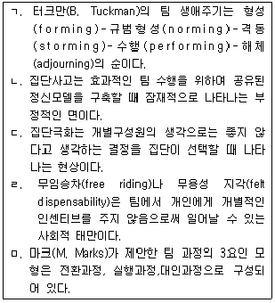
- ㄱ, ㄴ
- ㄱ, ㄷ
- ㄱ, ㄷ, ㅁ
- ㄷ, ㄹ, ㅁ
- ㄱ, ㄴ, ㄷ, ㄹ
(정답률: 알수없음)
65. 반생산적 업무행동(CWB)에 관한 설명으로 옳지 않은 것은?
- 반생산적 업무행동의 사람기반 원인에는 성실성(conscientiousness), 특성분노(trait anger), 자기통제력(self control), 자기애적 성향(narcissism) 등이 있다.
- 반생산적 업무행동의 주된 상황기반 원인에는 규범, 스트레스에 대한 정서적 반응, 외적 통제소재, 불공정성 등이 있다.
- 조직의 재산이나 조직 성원의 일을 의도적으로 파괴하거나 손상을 입히는 반생산적 업무행동은 심각성, 반복가능성, 가시성에 따라 구분되어 진다.
- 사회적 폄하(social undermining)는 버릇없거나 의욕을 떨어뜨리는 행동으로 직장에서 용수철 효과(spiraling effect)처럼 작용하는 반생산적 업무행동이다.
- 직장폭력과 공격을 유발하는 중요한 예측치는 조직에서 일어난 일이 얼마나 중요하게 인식되는가를 의미하는 유발성 지각(perceived provocation)이다.
(정답률: 알수없음)
66. 인간지각 특성에 관한 설명으로 옳지 않은 것은?
- 평행한 직선들이 평행하게 보이지 않는 방향착시는 가현운동에 의한 착시의 일종이다.
- 선택, 조직, 해석의 세 가지 지각과정 중 게슈탈트 지각 원리들이 나타나는 것은 조직 과정이다.
- 전체적인 맥락에서 문자나 그림 등의 빠진 부분을 채워서 보는 지각 원리는 폐쇄성(closure)이다.
- 일반적으로 감시하는 대상이 많아지면 주의의 폭은 넓어지고 깊이는 얕아진다.
- 주의력의 특성으로는 선택성, 방향성, 변동성이 있다.
(정답률: 알수없음)
67. 휴먼에러(human error)에 관한 설명으로 옳은 것은?
- 리전(J. Reason)의 휴먼에러 분류는 행위의 결과만을 보고 분류하므로 에러 분류가 비교적 쉽고 빠른 장점이 있다.
- 지식기반 착오(knowledge based mistake)는 무의식적 행동 관례 및 저장된 행동 양상에 의해 제어되는 것이다.
- 라스무센(J. Rasmussen)은 인간의 불완전한 행동을 의도적인 경우와 비의도적인 경우로 구분하여 에러 유형을 분류하였다.
- 누락오류, 작위오류, 시간오류, 순서오류는 원인적 분류에 해당하는 휴먼에러이다.
- 스웨인(A. Swain)은 휴먼에러를 작업 완수에 필요한 행동과 불필요한 행동을 하는 과정에서 나타나는 에러로 나누었다.
(정답률: 알수없음)
68. 작업 환경과 건강에 관한 설명으로 옳은 것을 모두 고른 것은?(문제 오류로 실제 시험에서는 전항 정답 처리 되었습니다. 여기서는 1번을 누르면 정답 처리 됩니다.)
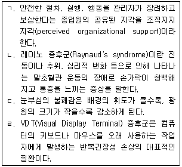
- ㄱ, ㄴ
- ㄴ, ㄷ
- ㄱ, ㄷ, ㄹ
- ㄴ, ㄷ, ㄹ
- ㄱ, ㄴ, ㄷ, ㄹ
(정답률: 알수없음)
69. 전기화재의 발생원인이 아닌 것은?
- 누전
- 과전류
- 단열압축
- 절연파괴
- 전기스파크
(정답률: 알수없음)
70. 산업안전보건기준에 관한 규칙상 안전난간의 구조 및 설치요건에 관한 설명으로 옳지 않은 것은?
- 상부 난간대는 바닥면ㆍ발판 또는 경사로의 표면(이하 "바닥면등"이라 한다)으로 부터 90센티미터 이상 지점에 설치할 것
- 상부 난간대와 중간 난간대는 난간 길이 전체에 걸쳐 바닥면등과 평행을 유지할 것
- 안전난간은 구조적으로 가장 취약한 지점에서 가장 취약한 방향으로 작용하는 100킬로그램 이상의 하중에 견딜 수 있는 튼튼한 구조일 것
- 발끝막이판은 바닥면등으로부터 5센티미터 높이를 유지할 것. 다만, 물체가 떨어지거나 날아올 위험이 없거나 그 위험을 방지할 수 있는 망을 설치하는 등 필요한 예방 조치를 한 장소는 제외할 것
- 난간대는 지름 2.7센티미터 이상의 금속제 파이프나 그 이상의 강도가 있는 재료일 것
(정답률: 알수없음)
71. 재해예방의 4원칙에 해당하지 않는 것은?
- 시행착오의 원칙
- 예방가능의 원칙
- 손실우연의 원칙
- 대책선정의 원칙
- 원인계기(연계)의 원칙
(정답률: 알수없음)
72. 산업안전보건법령상 유해인자별 노출농도의 허용기준으로 옳지 않은 것은?
- 디메틸포름아미드: 시간가중평균값(TWA) 10 ppm
- 2-브로모프로판: 시간가중평균값(TWA) 5 ppm
- 이황화탄소: 시간가중평균값(TWA) 1 ppm
- 포름알데히드: 시간가중평균값(TWA) 0.3 ppm
- 노말헥산: 시간가중평균값(TWA) 50 ppm
(정답률: 알수없음)
73. 다음에서 설명하는 것은?
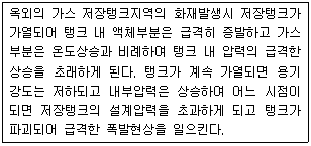
- 보일오버
- 슬롭오버
- 증기운폭발
- 블레비
- 백드래프트
(정답률: 알수없음)
74. 산업안전보건기준에 관한 규칙상 가설통로의 구조에 관한 설명으로 옳지 않은 것은?
- 경사는 30도 이하로 할 것. 다만, 계단을 설치하거나 높이 2미터 미만의 가설통로로서 튼튼한 손잡이를 설치한 경우에는 그러하지 아니하다.
- 경사가 15도를 초과하는 경우에는 미끄러지지 아니하는 구조로 할 것
- 수직갱에 가설된 통로의 길이가 15미터 이상인 경우에는 15미터 마다 계단참을 설치할 것
- 견고한 구조로 할 것
- 추락할 위험이 있는 장소에는 안전난간을 설치할 것. 다만, 작업상 부득이한 경우에는 필요한 부분만 임시로 해체할 수 있다.
(정답률: 알수없음)
75. 방진마스크에 관한 설명으로 옳지 않은 것은?
- “전면형 방진마스크”란 분진 등으로부터 안면부 전체(입, 코, 눈)를 덮을 수 있는 구조의 방진마스크를 말한다.
- 산소농도 18% 이상인 장소에서 사용하여야 한다.
- “반면형 방진마스크”란 분진 등으로부터 안면부의 입과 코를 덮을 수 있는 구조의 방진마스크를 말한다.
- 방진마스크는 쉽게 착용되어야 하고 착용하였을 때 안면부가 안면에 밀착되어 공기가 새지 않아야 한다.
- 석면 취급 장소에서는 2급 방진마스크를 사용해야 한다.
(정답률: 알수없음)